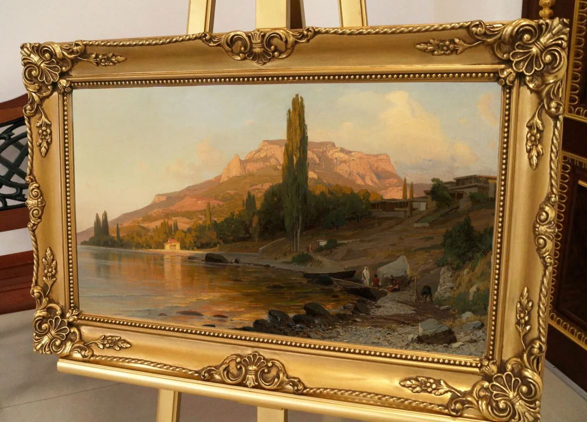

Московский Политехнический Университет
Использование технологий 3D-сканирования для детального воссоздания и проектирования картинных рам, сохраняющих историческую ценность. Этот технологический подход открывает принципиально новые возможности для реставрации и музейного дела. Процесс начинается с получения высокоточного «цифрового слепка» объекта, который фиксирует не только общую геометрию рамы, но и мельчайшие нюансы: характер резьбы, фактуру дерева и даже микротрещины, свидетельствующие о возрасте изделия.
